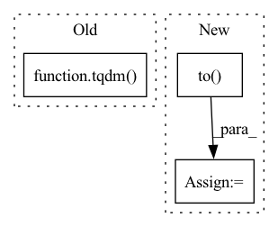

Pattern ID :8668
Before Change
test_loader = DataLoader(test_data, batch_size=1, shuffle=True, num_workers=4)
i = 0
loop = tqdm( test_loader)
for batch_idx, frames in enumerate(loop):
if i >= 10: break
After Change
with torch.no_grad():
for i in tqdm(range(10)):
frames = next(iter_loader).to( DEVICE) // [1, T, 3, h, w]
frames_vis = postprocess_img(frames.squeeze(dim=0)) // [T, 3, h, w]
input = frames[:, :VIDEO_IN_LENGTH] // [1, t, 3, h, w]
pred_rgb = pred_rgb_model.pred_n(input, pred_length=VIDEO_PRED_LENGTH)
pred_rgb = torch.cat([input, pred_rgb], dim=1) // [1, T, 3, h, w]
pred_rgb_vis = postprocess_img(pred_rgb.squeeze(dim=0)) // [T, 3, h, w]
pred_rgb = torch.stack([seg_model(pred_rgb[:, i]) for i in range(pred_rgb.shape[1])], dim=1)
pred_rgb = pred_rgb.argmax(dim=2).squeeze() // [T, h, w]
pred_then_colorized_vis = colorize_semseg(postprocess_mask(pred_rgb), num_classes=SYNPICK_CLASSES).transpose(0, 3, 1, 2) // [T, 3, h, w]
frames_seg = torch.stack([seg_model(frames[:, i]) for i in range(frames.shape[1])], dim=1).argmax(dim=2) // [1, T, 1, h, w]
frames_seg_in = torch.stack([(frames_seg == i) for i in range(SYNPICK_CLASSES)], dim=2).float() // [1, T, c, h, w] one-hot float
input_seg = frames_seg_in[:, :VIDEO_IN_LENGTH] // [1, t, c, h, w]
pred_mask = pred_mask_model.pred_n(input_seg, pred_length=VIDEO_PRED_LENGTH).argmax(dim=2) // [1, n, 1, h, w]
pred_mask = torch.cat([input_seg.argmax(dim=2), pred_mask], dim=1).squeeze() // [T, h, w]In pattern: SUPERPATTERN
Frequency: 3
Non-data size: 3
Instances Fragment ID: 30071498
Project Name: ais-bonn/vp-suite
Commit Name: 13016d4ab8ba4f8e7ee087155a6c5171f4d00ba3
Time: 2021-08-02
Author: boltres@ais.uni-bonn.de
File Name: scripts/visualize_4_way.py
M Class Name: AnonimousClass
N Class Name: AnonimousClass
M Method Name: visualize_4_way(1)
N Method Name: visualize_4_way(1)
M Parent Class:
N Parent Class:
M File Name: scripts/visualize_4_way.py
N File Name: scripts/visualize_4_way.py
M Start Line: 16
M End Line: 73
N Start Line: 17
N End Line: 74
Before Change
train_running_loss = 0.0
loss_count = 0
for index, (frames, caption) in enumerate(
tqdm( train_loader, desc="epoch:{}".format(epoch)) ):
optimizer.zero_grad()
model.train()
After Change
for src, tgt, src_padding_mask, tgt_padding_mask in tqdm(train_dataloader):
src = src.to(device)
tgt = tgt.to( device)
tgt_padding_mask = tgt_padding_mask.to(device)[:, :-1]
src_padding_mask = src_padding_mask.to(device)
tgt_input = tgt[:, :-1] // N T-1
tgt_mask = generate_square_subsequent_mask(tgt_input.shape[1])
logits = model(src, tgt_input,
tgt_mask=tgt_mask, tgt_padding_mask=tgt_padding_mask,
src_mask=None, src_padding_mask=src_padding_mask) // N T-1 vocab_szie
Fragment ID: 30071502
Project Name: kamino666/video-captioning-transformer
Commit Name: 6560c19b1b21061f61b9959ba32fbc20aa4d44a0
Time: 2021-10-01
Author: 516015417@qq.com
File Name: train.py
M Class Name: AnonimousClass
N Class Name: AnonimousClass
M Method Name: train_epoch(3)
N Method Name: train_epoch(6)
M Parent Class:
N Parent Class:
M File Name: train.py
N File Name: train.py
M Start Line: 128
M End Line: 151
N Start Line: 53
N End Line: 79
Before Change
// Compute anomaly map of normal images
for i, (img, mask) in tqdm( enumerate(self.test_normal_dataloader)) :
img.to(self.cfg.device)
h, w, c = img.shapeAfter Change
for k in range(0, w-patch_size):
patch = img[:, :, j:j+patch_size, k:k+patch_size]
patch = patch.to( self.cfg.device)
surrogate_label, pred = self.school(patch)
loss = self.criterion(pred, surrogate_label)
anomaly_map[j:j+patch_size, k:k+patch_size] = loss.item()
Fragment ID: 30071487
Project Name: taikiinoue/stad
Commit Name: fa86afcb446f6f9853f81d36632e9b83d767e1f9
Time: 2020-07-07
Author: taikiinoue45@gmail.com
File Name: stad/trainer/trainer.py
M Class Name: Trainer
N Class Name: Trainer
M Method Name: run_inference(1)
N Method Name: run_inference(1)
M Parent Class:
N Parent Class:
M File Name: stad/trainer/trainer.py
N File Name: stad/trainer/trainer.py
M Start Line: 141
M End Line: 179
N Start Line: 140
N End Line: 184